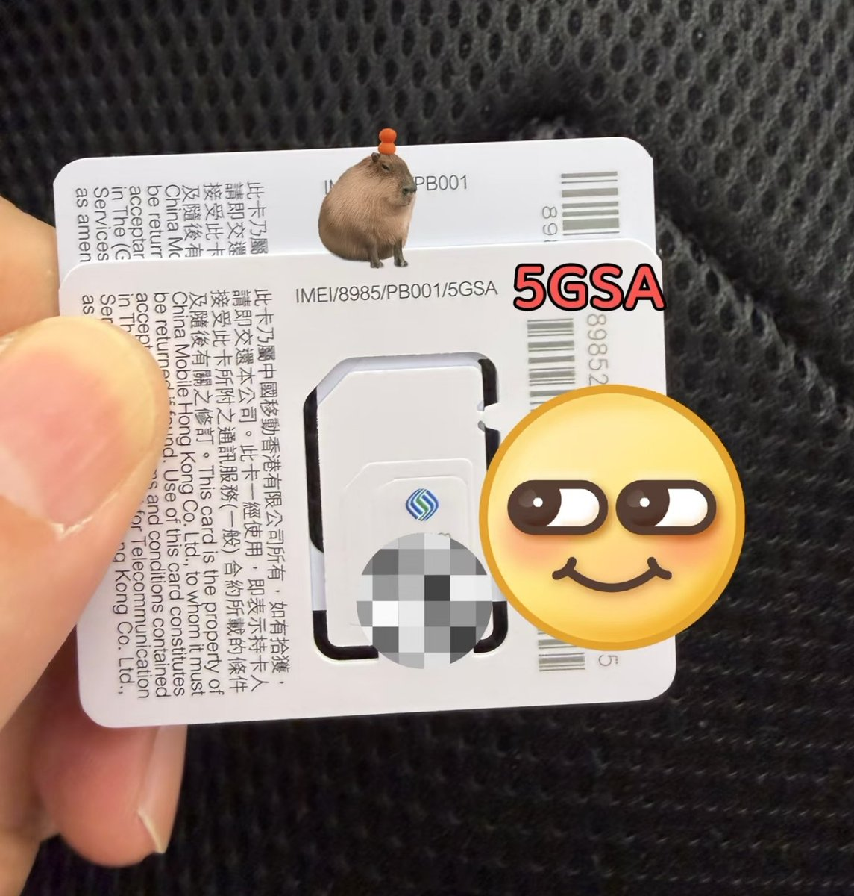

感谢 @Yumeri0913 梦璃姐姐的指正🤗CMHK的SA漫游在Android上不需换SUCI实体卡，直接锁NR Only即可～取决于当地基站支持，如CTM只支持部分一线城市
在iPhone上使用CMHK的SA漫游需满足17系列的iOS26.0.1，这个SA漫游bug也来自中国大陆的错误配置。
最后就是CMHK的eSIM现在也有“独立5G”的选项了，在iPhone17系列上市后在mylink里补eSIM就有SUCI，并且在eSTK能正确识别SUCI
看来我对SA漫游还有点不专业🤗

在iPhone上使用CMHK的SA漫游需满足17系列的iOS26.0.1，这个SA漫游bug也来自中国大陆的错误配置。
最后就是CMHK的eSIM现在也有“独立5G”的选项了，在iPhone17系列上市后在mylink里补eSIM就有SUCI，并且在eSTK能正确识别SUCI
看来我对SA漫游还有点不专业🤗

感谢 @Yumeri0913 梦璃姐姐的指正🤗CMHK的SA漫游在Android上不需换SUCI实体卡，直接锁NR Only即可～
在iPhone上使用CMHK的SA漫游需满足17系列的iOS26.0.1，这个SA漫游bug也来自中国大陆的错误配置。 https://t.co/rAic5VpG8i
在iPhone上使用CMHK的SA漫游需满足17系列的iOS26.0.1，这个SA漫游bug也来自中国大陆的错误配置。 https://t.co/rAic5VpG8i
在大中华区（自由圈A区）享受无限量不限速，并且首个在中国大陆地区支持5G SA漫游！
别忘了换支持5G SA（如图）的实体卡哦，不然是用不了独立5G的～放CPE/随身WiFi里直接当IPLC/IEPL专线宽带使！
如果主用自由圈，那么CMHK最适合开的套餐是：「5G本地服务计划10GB」 https://t.co/KpbFzXwWWE https://t.co/4dWJE5vPAG
别忘了换支持5G SA（如图）的实体卡哦，不然是用不了独立5G的～放CPE/随身WiFi里直接当IPLC/IEPL专线宽带使！
如果主用自由圈，那么CMHK最适合开的套餐是：「5G本地服务计划10GB」 https://t.co/KpbFzXwWWE https://t.co/4dWJE5vPAG